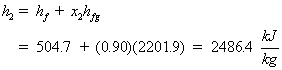
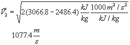
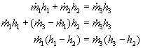
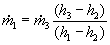
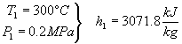
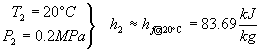
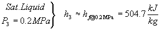
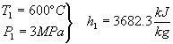
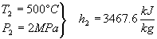
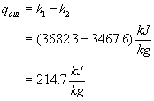

MODULE 7: FIRST LAW OF THERMODYNAMICS APPLIED
TO OPEN SYSTEMS: STABLE PROCESSES
(fragments of the CD that comes with
Cengel&Boles's book "Thermodynamics", 3-d edition, McGraw-Hill,
1998)
Example 1
Refrigerant-134a at 200 kPa, 40% quality
flows through a 1.1 cm inside diameter tube with a velocity of 50 m/s. Find
the mass flow rate of the refrigerant-134a.
At P = 200 kPa, x = 0.4
The fluid volume flowing through a cross section per unit time is called the volume flow rate . The volume flow rate is given by integrating the product of the velocity normal to the flow area and the differential flow area over the flow area. If the velocity over the flow area is a constant, the volume flow rate is given by (note we are dropping the "av" subscript on the velocity)
The mass and volume flow rate are related by
Example 2
Air at 100 kPa, 50ºC flows through a pipe with a volume flow rate of 40 m3/min.
Find the mass flow rate through the pipe.
Assume air to be an ideal gas, so
Example 3
Steam at 0.4 MPa, 300ºC enters an adiabatic nozzle with a low velocity and leaves at 10 kPa with a quality of 90%. Find the exit velocity, in m/s.
Control volume: The nozzle
Property relation: Steam tables
Process: Assume steady-state, steady-flow
Conservation Principles:
Conservation of mass: for one entrance, one exit, the conservation of mass becomes
Conservation of energy:
According to the sketched control volume, mass crosses the control surface, but no work or heat transfer crosses the control surface. Neglecting the potential energies, we have
Neglecting the inlet kinetic energy, the exit velocity is
Now, we need to find the enthalpies from the steam tables.
At 0.2 MPa hf = 504.7 kJ/kg and hfg = 2201.9 kJ/kg


High pressure air at 1300 K flows into an aircraft gas turbine and undergoes
a steady-state, steady-flow, adiabatic process to the turbine exit at 660 K.
Calculate the work done per unit mass of air flowing through the turbine when
(a) Temperature dependent data is used.
(b) Cp,av at the average temperature is used.
(c) Cp at 300 K is used.
Control volume: The turbine
Property relation: Assume air is an ideal gas and use ideal gas relations.
Process: Steady-state, steady-flow, adiabatic process
Conservation Principles:
Conservation of mass:
Conservation of energy:
According to the sketched control volume, mass and work cross the control surface. Neglecting kinetic and potential energies and noting the process is adiabatic, we have
The work done by the air per unit mass flow is
Notice that the work done by a fluid flowing through a turbine is equal to the enthalpy decrease of the fluid.
(a) Using the air tables, A.17
at T1 = 1300 K, h1 = 1395.97 kJ/kg,
at T2 = 660 K, h2 = 670.47 kJ/kg
(b) Using Table A.2 at Tav = 980 K, Cp = 1.138 kJ/(kg K)
c. Using Table A.2 at T = 300 K, Cp = 1.005 kJ/(kg K)
Example 5
Nitrogen gas is compressed in a steady-state, steady-flow, adiabatic process from
0.1 MPa, 25ºC. During the compression process the temperature becomes 125ºC. If the mass flow rate is 0.2 kg/s, determine the work done on the nitrogen, in kW.
Control volume: The compressor (see the compressor sketched above)
Property relation: Assume nitrogen is an ideal gas and use ideal gas relations.
Process: Steady-state, steady-flow
Conservation Principles:
Conservation of mass:Conservation of energy:
According to the sketched control volume, mass and work cross the control surface. Neglecting kinetic and potential energies and noting the process is adiabatic, we have for one entrance and one exit
The work done on the nitrogen is related to the enthalpy rise of the nitrogen as it flows through the compressor. The work done on the nitrogen per unit mass flow is
Assuming constant specific heats at 300 K, we write the work as
Example 6
One way to determine the quality of saturated steam is to throttle the steam to a low enough pressure that it exists as a superheated vapor. Saturated steam at 0.4 MPa is throttled to 0.1 MPa, 100ºC. Determine the quality of the steam at 0.4 MPa.
Control volume: The throttle
Property relation: The steam tables
Process: Steady-state, steady-flow, no work, no heat transfer, neglect kinetic and potential energies, one entrance, one exit
Conservation Principles:
Conservation of mass:Conservation of energy:
According to the sketched control volume, mass crosses the control surface. Neglecting kinetic and potential energies and noting the process is adiabatic with no work, we have for one entrance and one exit
therefore
Example 7
Steam at 0.2 MPa, 300ºC enters a mixing chamber and is mixed with cold water at 20ºC, 0.2 MPa to produce 20 kg/s of saturated liquid water at 0.2 MPa. What are the required steam and cold water flow rates?
Control volume: The mixing chamber
Property relation: Steam tables
Process: Assume steady-state, steady-flow, adiabatic mixing, with no work
Conservation Principles:
Conservation of mass:Conservation of energy:
According to the sketched control volume, mass crosses the control surface. Neglecting kinetic and potential energies and noting the process is adiabatic with no work, we have for two entrances and one exit


Now, we use the steam tables to find the enthalpies:



Example 8
Air is heated in a heat exchanger by hot water. The water enters the heat exchanger at 45ºC and experiences a 20ºC drop in temperature. As the air passes through the heat exchanger its temperature is increased by 20ºC. Determine the ratio of mass flow rate of the air to mass flow rate of the water.
Control volume: The heat exchanger
Property relation: air: ideal gas relations; water: steam tables or incompressible liquid results
Process: Assume steady-state, steady-flow
Conservation Principles:
Conservation of mass:
for two entrances, two exits, the conservation of mass becomes
For two fluid streams that exchange energy but do not mix it is better to conserve the mass for the fluid streams separately.
Conservation of energy:
According to the sketched control volume, mass crosses the control surface, but no work or heat transfer crosses the control surface. Neglecting the kinetic and potential energies, we have for steady-state, steady-flow
We assume that the air has constant specific heats at 300 K ( we don't know the actual temperatures, just the temperature difference). Because we know the initial and final temperatures for the water, we can use either the incompressible fluid result or the steam tables for its properties.
Using the incompressible fluid approach for the water, Cp,= 4.184 kJ/(kg K) .
A second solution to this problem is obtained by determining the heat transfer rate from the hot water and noting that this is the heat transfer rate to the air. Considering each fluid separately for steady-state, steady-flow, one entrance, one exit, and neglecting the kinetic and potential energies, the first law, or conservation of energy equations become
Example 9
In a simple steam power plant, steam leaves a boiler at 3 MPa, 600ºC and enters a turbine at 2 MPa, 500ºC. Determine the in-line heat transfer from the steam per kilogram mass flowing in the pipe between the boiler and the turbine.
Control volume: Pipe section in which the heat loss occurs.
Property relation: Steam tables
Process: Steady-state, Steady-flow
Conservation Principles:
Conservation of mass:
for one entrance, one exit, the conservation of mass becomes
Conservation of energy:
According to the sketched control volume, heat transfer and mass cross the control surface, but no work crosses the control surface. Neglecting the kinetic and potential energies, we have for steady-state, steady-flow
We determine the heat transfer rate per unit mass of flowing steam as
We use the steam tables to determine the enthalpies at the two states as



Example 10
Air at 100ºC, 0.15 MPa, 40 m/s flows through a converging duct with a mass flow rate of 0.2 kg/s. The air leaves the duct with at 0.1 MPa, 113.6 m/s. The exit-to-inlet duct area ratio is 0.5. Find the required rate of heat transfer to the air when no work is done by the air.
Control volume: The converging duct
Property relation: Assume air is an ideal gas and use ideal gas relations.
Process: Steady-state, steady-flow
Conservation Principles:
Conservation of mass:
for one entrance, one exit, the conservation of mass becomes
Conservation of energy:
According to the sketched control volume, heat transfer and mass cross the control surface, but no work crosses the control surface. Here keep the kinetic energy and still neglect the potential energies, we have for steady-state, steady-flow
In the first law equation, the following are known: P1, T1 (and h1), , , , and A2/A1. The unknowns are , and h2 (or T2). We use the first law and the conservation of mass equation to solve for the two unknowns.
Solving for T2
Assuming Cp = constant, h2 - h1 = Cp(T2 - T1)
Looks like we made the wrong assumption for the direction of the heat transfer. The heat is really leaving the flow duct.